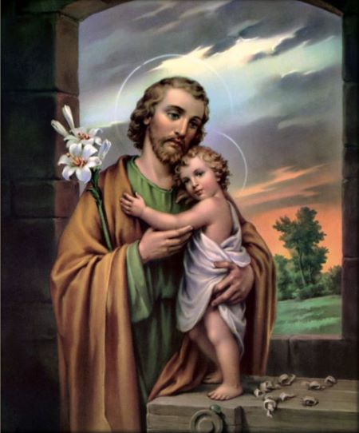
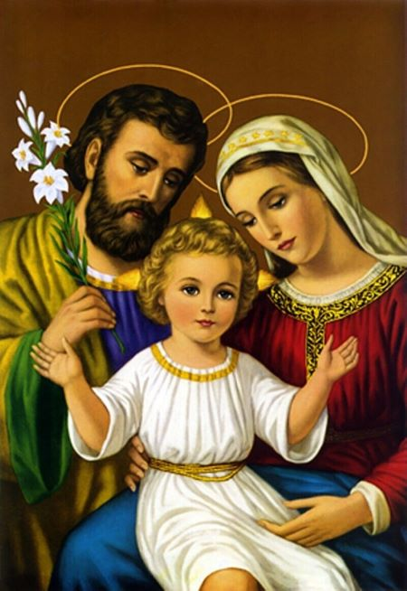

¡DÍA 7 - DICIEMBRE 22!
fecha: 16 dic
categoria: Oración
Representémonos el viaje de María y José hacia Belén, llevando consigo, aún no nacido, al Creador del universo hecho hombre. Contemplemos la humanidad y la obediencia de este Divino Niño que aunque de raza judía y habiendo amado durante siglos a su pueblo con una predilección inexplicable, obedece así a un príncipe extranjero que forma el censo de población de su provincia, como si hubiese para El en esa circunstancia algo que le halagase, y quisiese apresurarse a aprovechar la ocasión de hacerse empadronar oficial y auténticamente como súbdito en el momento en el que venía al mundo. ¿No es extraño que la humillación, que causa tan invencible repugnancia a la criatura, parezca ser la única cosa creada que tenga atractivos para el Creador? ¿No nos enseñará la humildad de Jesús a amar esa hermosa virtud?.
¡Ah...!Que llegue el momento en que aparezca el deseado de las naciones, porque todo clama por este feliz acontecimiento, El mundo, sumido en la oscuridad y el malestar buscando y no encontrando el alivio de sus males, suspira por su Libertador. El anhelo de José, la expectativa de María, son cosa que no puede expresar el lenguaje humano. El Padre Eterno se halla, si es lícito emplear esta expresión adorablemente impaciente por dar a su Hijo único al mundo, y verle ocupar su puesto entre las criaturas visibles. El Espíritu Santo arde en deseos de presentar a la luz del día esta santa humanidad tan bella que El mismo ha formado con tan especial y divino esmero, En cuando al Divino Niño, objeto de tantos anhelos, recordemos que hacia nosotros avanza lo mimo que hacia Belén, Apresuremos con nuestro deseo el momento de su llegada; purifiquemos nuestras almas para que sean su mística morada, y nuestro s corazones para que sean su Manis terrenal; que nuestros actos de mortificación desprendimiento "preparen los caminos del Señor y hagan rectos sus senderos".
fecha: 16 dic
categoria: Oración
Benignísimo Dios de infinita caridad, que tanto amasteis a los hombres, que les dísteis en vuestro hijo la prenda de vuestro amor, para que hecho hombre en las entrañas de una Virgen naciese en un pesebre para nuestra salud y remedio; yo, en nombre de todos los mortales, os doy infinitas gracias por tan soberano beneficio. En retorno de él os ofrezco la pobreza, humildad y demás virtudes de vuestro hijo humanado, suplicándoos por sus divinos méritos, por las incomodidades en que nació y por las tiernas lágrimas que derramó en el pesebre, que dispongáis nuestros corazones con humildad profunda, con amor encendido, con tal desprecio de todo lo terreno, para que Jesús recién nacido tenga en ellos su cuna y more eternamente. Amén. (Se reza tres veces Gloria al Padre).
fecha: 16 dic
categoria: Oración
Soberana María que por vuestras grandes virtudes y especialmente por vuestra humildad, merecisteis que todo un Dios os escogiese por madre suya, os suplico que vos misma preparéis y dispongáis mi alma y la de todos los que en este tiempo hiciesen esta novena, para el nacimiento espiritual de vuestro adorado hijo. ¡Oh dulcísima madre!, comunicadme algo del profundo recogimiento y divina ternura con que lo aguardasteis vos, para que nos hagáis menos indignos de verle, amarle y adorarle por toda la eternidad. Amén. (Se reza tres veces el Avemaría).
fecha: 16 dic
categoria: Oración

¡Oh santísimo José, esposo de María y padre adoptivo de Jesús! Infinitas gracias doy a Dios porque os escogió para tan soberanos misterios y os adornó con todos los dones proporcionados a tan excelente grandeza. Os ruego, por el amor que tuvisteis al Divino Niño, me abracéis en fervoroso deseos de verle y recibirle sacramentalmente, mientras en su divina esencia le veo y le gozo en el cielo. Amén. (Se reza un Padrenuestro, un Avemaría y un Gloria).
fecha: 16 dic
categoria: Oración

Acordaos, ¡oh dulcísimo Niño Jesús!, que dijisteis a la venerable Margarita del santísimo Sacramento, y en persona suya a todos vuestros devotos, estas palabras tan consoladoras para nuestra pobre humanidad agobiada y doliente: "Todo lo que quieras pedir, pídelo por los méritos de mi infancia y nada te será negado". Llenos de confianza en vos, ¡oh Jesús!, que sois la misma verdad, venimos a exponeros toda nuestra miseria. Ayúdanos a llevar una vida santa, para conseguir una eternidad bienaventurada. Concédenos por los méritos infinitos de vuestra infancia, la gracia de la cual necesitamos tanto. Nos entregamos a vos, ¡oh Niño omnipotente!, seguros de que no que dará frustrada nuestra esperanza, y de que en virtud de vuestra divina promesa, acogeréis y despacharéis favorablemente nuestra súplica. Amén.
fecha: 16 dic
categoria: Oración
Dulce Jesús mío, mi niño adorado ¡Ven a nuestras almas! ¡Ven no tardes tanto!
1. ¡Oh, Sapiencia suma del Dios soberano, que a infantil alcance te rebajas sacro! ¡Oh, Divino Niño, ven para enseñarnos la prudencia que hace verdaderos sabios! Ven a nuestras...
2. ¡Oh, Adonai potente que Moisés hablando, de Israel al pueblo diste los mandatos! ¡Ah, ven prontamente para rescatarnos, y que un niño débil muestre fuerte el brazo! Ven a nuestras...
3. ¡Oh, raíz sagrada de José que en lo alto presenta al orbe tu fragante nardo! Dulcísimo Niño que has sido llamado Lirio de los valles, Bella flor del campo. Ven a nuestras...
4. ¡Llave de David que abre al desterrado las cerradas puertas de regio palacio! ¡Sácanos. Oh Niño con tu blanca mano, de la cárcel triste que labró el pecado! Ven a nuestras...
5. ¡Oh, lumbre de Oriente, sol de eternos rayos, que entre las tinieblas tu esplendor veamos! Niño tan precioso, dicha del cristiano, luzca la sonrisa de tus dulces labios. Ven a nuestras...
6. ¡Espejo sin mancha, santo de los santos, sin igual imagen del Dios soberano! ¡Borra nuestras culpas, salva al desterrado y en forma de niño, da al mísero amparo! Ven a nuestras...
7. ¡Rey de las naciones, Emmanuel preclaro, De Israel anhelo Pastor del rebaño! ¡Niño que apacientas con suave cayado ya la oveja arisca, ya el cordero manso! Ven a nuestras...
8. ¡Ábranse los cielos y llueva de lo alto bienhechor rocío como riego santo! ¡Ven hermoso Niño, ven Dios humanado! ¡Luce, Dios estrella! ¡Brota, flor del campo! Ven a nuestras...
9. ¡Ven, que ya María previene sus brazos, do su niño vean, en tiempo cercanos! ¡Ven, que ya José, con anhelo sacro, se dispone a hacerse de tu amor sagrario! Ven a nuestras...
10. ¡Del débil auxilio, del doliente amparo, consuelo del triste, luz del desterrado! ¡Vida de mi vida, mi dueño adorado, mi constante amigo, mi divino hermano! Ven a nuestras...
11. ¡Ven ante mis ojos, de ti enamorados! ¡Bese ya tus plantas! ¡Bese ya tus manos! ¡Prosternado en tierra, te tiendo los brazos, y aún más que mis frases, te dice mi llanto! Ven a nuestras...
12. ¡Ven Salvador nuestro por quien suspiramos Ven a nuestras almas, Ven, no tardes tanto!
IR ARRIBA